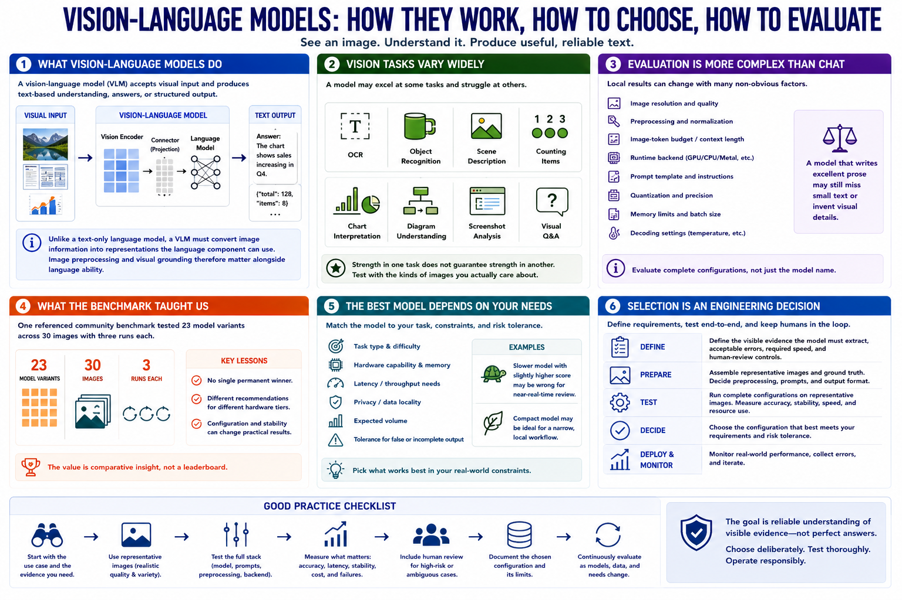

What Makes Vision Models Different?
Connecting to LMS... Progress: in progress

Narration
A vision-language model accepts visual input and produces text-based understanding, answers, or structured output. Unlike a text-only language model, it must convert image information into representations the language component can use. Image preprocessing and visual grounding therefore matter alongside language ability.
Vision tasks vary widely. A model may perform OCR, recognize objects, describe scenes, count items, read charts, interpret diagrams, analyze screenshots, or answer questions about visible evidence. Strength in one task does not guarantee strength in another.
Local evaluation also differs from ordinary chat testing. Image resolution, preprocessing, image-token budget, runtime backend, prompt template, quantization, and memory limits can change output. A model that writes excellent prose may still miss small text or invent visual details.
One referenced community benchmark tested 23 model variants across 30 images with three runs each. Its useful lesson was not one permanent winner. It found different recommendations for different hardware tiers and showed that configuration and stability can change practical results.
The best model depends on task, hardware, latency, privacy, expected volume, and tolerance for false or incomplete output. A slower model with a slightly higher score may be wrong for near-real-time review, while a compact model may be ideal for a narrow local workflow.
Selection is an engineering decision. Define visible evidence the model must extract, acceptable errors, required speed, and human-review controls, then test complete configurations on representative images.